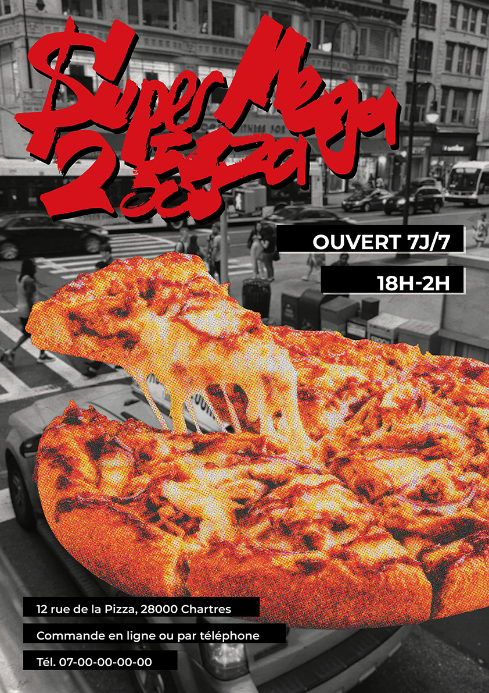
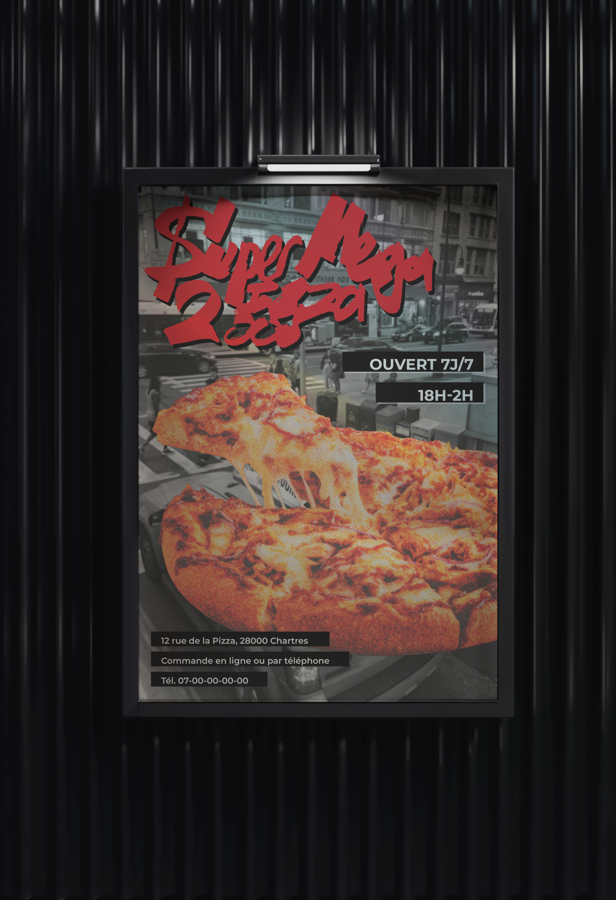

Super Mega Pizza 2000 est une affiche promotionnelle pour une pizzeria fictive. Mon objectif dans ce projet était d'adopter les codes de la street culture pour séduire un public jeune et urbain.
Pour les couleurs de mon affiche, j'ai misé sur un contraste fort entre le rouge vif et des nuances de noir et blanc pour faire ressortir les éléments clés : le titre et la pizza. Des cartouches noirs encadrent les informations pratiques, garantissant une bonne lisibilité sans surcharger la composition.
Pour ce qui est de la typographie, j’ai dessiné le nom de l’enseigne à la main, façon tag, avant de le vectoriser sous Illustrator pour un rendu plus net. Le fond urbain, flouté et passé en noir et blanc, sert de décor à l'élément central : une pizza retravaillée sous Photoshop avec un effet d’impression rétro saturé pour un rendu plus organique et percutant.